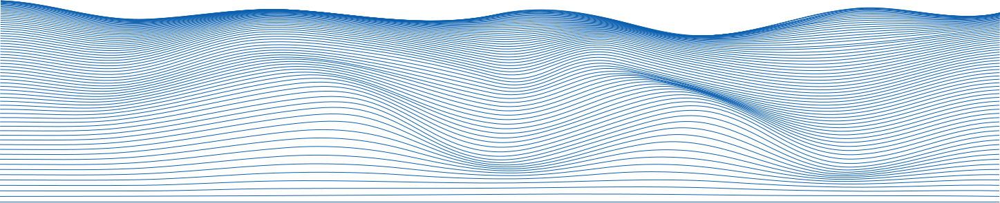
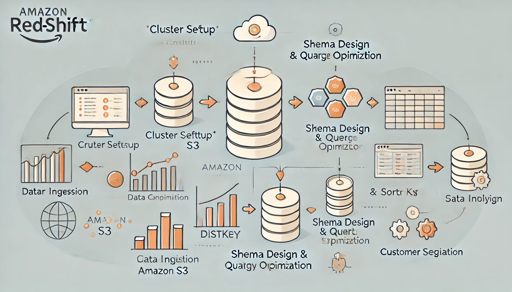
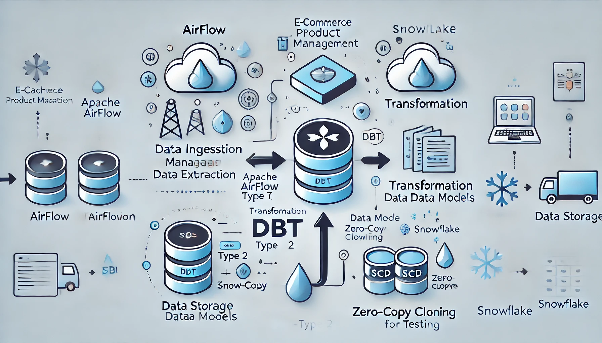

Hello!
I'm Shubham,
I'm Shubham,

I’m a graduate student pursuing my MS in Data Analytics at San Jose State University and an aspiring Data Engineer. Previously, I worked as a Data Analyst, where I honed my skills in creating scalable data solutions, building dashboards, and delivering actionable insights. My fascination lies in how raw data, when transformed correctly, can shape decisions that drive innovation and growth.
To broaden my expertise, I’ve chosen interdisciplinary coursework focusing on data engineering, machine learning, and cloud technologies. My engineering background has equipped me with strong problem-solving abilities, attention to detail, and a passion for turning challenges into solutions. During my undergrad, I led a technical project to completion, which strengthened my leadership and teamwork skills.
In my professional journey, I’ve collaborated with cross-functional teams to optimize workflows, design data pipelines, and improve decision-making processes. I strongly believe that combining the right tools, strategies, and data-driven decisions is the key to making a lasting impact.
Finally, some quick bits about me.
From data wrangling to cloud deployment, here are the technologies and tools I use to turn ideas into robust, scalable solutions.
 Python
Python SQL
SQL Pandas
Pandas NumPy
NumPy Power BI
Power BI Tableau
Tableau JavaScript
JavaScript TypeScript
TypeScript React
React Node.js
Node.js Docker
Docker Kubernetes
Kubernetes AWS
AWS Git
Git Apache Spark
Apache Spark
 Kafka
Kafka
 Hadoop
Hadoop
 Snowflake
Snowflake

Set up a data warehouse on Amazon Redshift to analyze e‑commerce transaction data, improving processing speed by 35 %. Designed performant data pipelines with DISTKEY and SORTKEY strategies, reducing query latency by 30 %.
